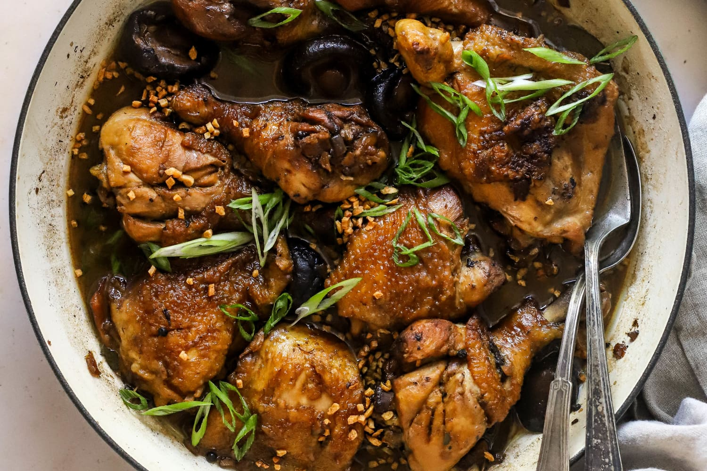

Ratatouille
This dish became infamous once it made its cameo in Disney's 'Ratatouille'. Ratatouille is a classic French Provencal dish of stewed vegetables that originated in Nice and is somtimes referred to as "ratatouille nicoise". Packed with fresh veggies and herbs, it's a healthy and delicious way to enjoy the best of your summer produce! Go to recipe.
Baklava
Flaky, crispy and not overly sweet. Baklava is a layered dessert made of filo pastry sheets, filled with chopped nuts, and sweetened with syrup or honey. You will love the hint of mellow lemony flavor which offsets the sweetness and compliments the cinnamon. The chocolate is optional but a nice touch to fancy up a tray of baklava. Go to recipe.

Chicken Adobo
Chicken Adobo is an authentic Filipino dish and is one of the most recognized Filipino foods. Chicken pieces are marinated in soy sauce and spices, pan-fried, and stewed until tender. The taste of juicy chicken in a succulent, umami adobo sauce makes chicken adobo a comfort food for everyone! Chicken adobo is one of the easiest dishes you can make! Go to recipe.